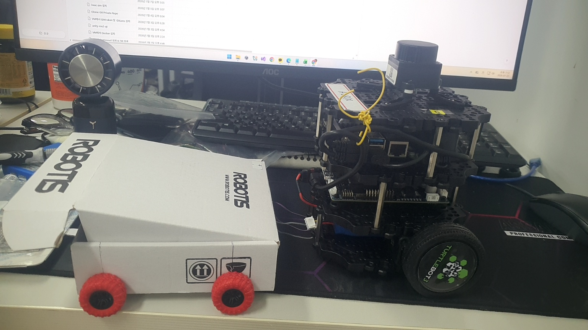
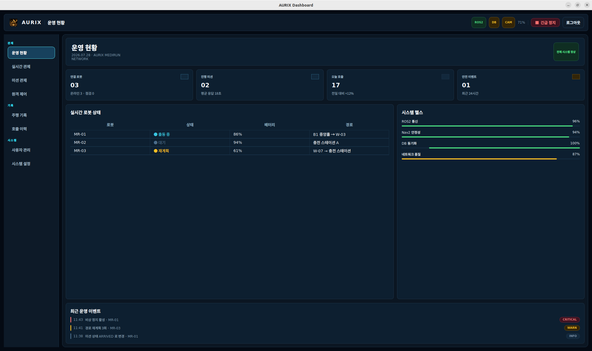
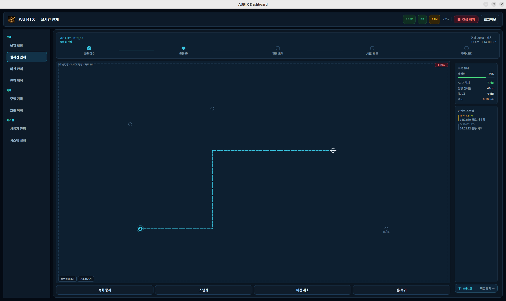
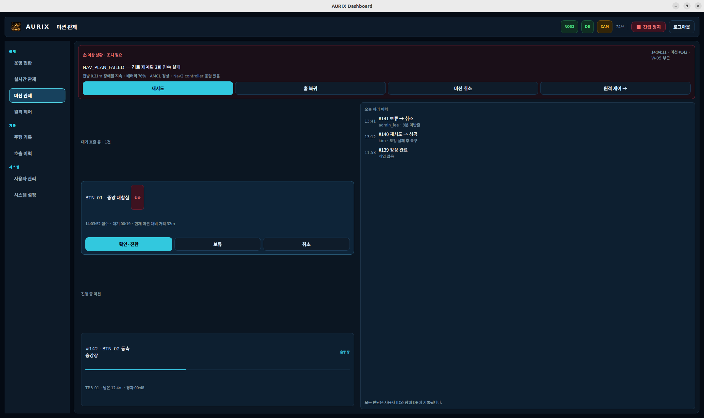
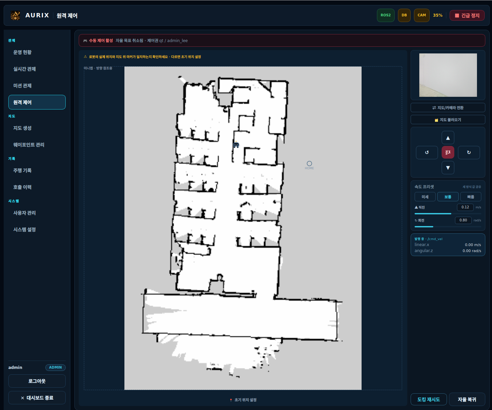
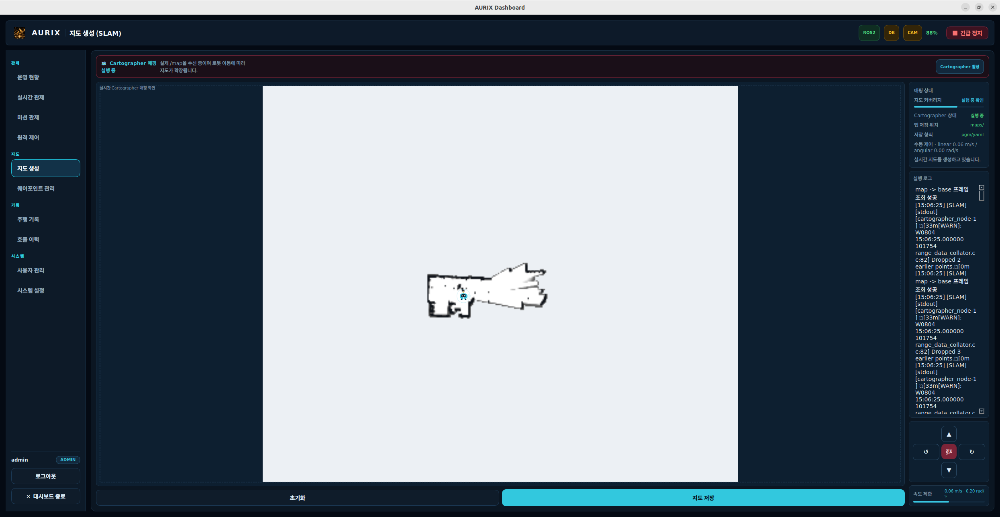

AURIX MediRun
지하철 역사 응급 AED 운반 보조 로봇
SOS 버튼 호출 이후 AED를 목적지까지 자율 주행으로 운반하고, 반출 감지·자동 복귀·운영 기록까지 이어지는 ROS 2 기반 응급 대응 보조 서비스입니다.
“현장 호출부터 운반, 복귀, 기록까지 한 흐름으로 연결된 응급 운반 로봇”

Project Overview
목격자가 환자 곁을 떠나 AED를 가지러 가는 시간을 줄이기 위해, SOS 버튼이 눌린 구역으로 로봇이 AED를 자율 운반하는 구조를 제안합니다.
프로젝트 목적
지하철 역사에서 버튼이 눌린 구역까지 AED를 운반하고, 호출 접수부터 복귀까지 전 과정을 자동화합니다.
운용 범위
호출 접수, 출동, 도착, AED 반출 감지, 자동 복귀, 홈 도킹, 로컬 DB 기록까지를 이번 범위로 둡니다.
제외 범위
환자 상태 판단, 의료 행위, 실제 119 자동 신고는 수행하지 않으며, 응급 대응 보조에 집중합니다.
시연 기준
버튼 3개와 목적지 3개의 1:1 매핑, 홈 위치 대기, 배터리·센서·AED 적재 상태 확인을 기본 시나리오로 잡았습니다.
서비스 시나리오 한 줄 요약
평일 퇴근 시간대 대합실에서 응급 상황 발생 → 현장 SOS 버튼 호출 → 관리자와 로봇이 동시에 반응 → AED 전달 후 복귀.
발표에서 강조할 책임 범위
“의료 판단 로봇”이 아니라 “위치 기반 운반·안내·기록 로봇”이라는 점을 명확히 두는 것이 핵심입니다.
Workspace Architecture
현재 저장소는 ROS 2 Humble, Qt6 GUI, PostgreSQL, TurtleBot3 벤더 패키지까지 하나의 워크스페이스 안에서 운영되도록 정리되어 있습니다.
Device Layer
- src/arduino_bridge
시리얼 브리지, LED, payload, 초음파, 버튼 연동 - src/medirun_sensor
센서 추상화와 mock/실기 연결 구조 - firmware/
all-in-one 모듈, hall sensor, ultrasonic 펌웨어
Mission Layer
- src/medirun_mission
mission_manager, payload_monitor, audio/LED manager - src/medirun_msgs
커스텀 메시지, 서비스, 액션 인터페이스 - src/medirun_vision
카메라, ArUco, 도킹 보조 경로
Operation Layer
- src/medirun_gui
운영 현황, 실시간 관제, 미션 관제, 원격 제어, 지도 생성 - src/medirun_db
PostgreSQL 연동, 이벤트·미션 기록 - docs/screenshots/gui
실제 발표에 쓸 운영 화면 캡처 보관
Platform Layer
- src/medirun_navigation
Nav2, AMCL, 정밀도 시험 러너 - src/medirun_bringup
전체 시스템 기동 launch - src/turtlebot3*
ROBOTIS 벤더 패키지 포함
문서용 구조가 아니라 실제 저장소에 존재하는 패키지 단위로 발표를 설명하면, “아이디어”가 아니라 “구현된 시스템”으로 전달됩니다.
End-to-End Mission Flow
문서의 서비스 시나리오와 현재 노드 구조가 직접 만나는 구간입니다. 발표에서는 이 흐름을 끊기지 않게 설명하는 것이 가장 중요합니다.
SOS 입력
벽면 버튼 또는 GUI 호출이 들어오면 button_id와 구역 정보를 이벤트로 발행합니다.
출동 검증
AED 적재, 배터리, 시스템 ready 상태를 확인하고 mission_id를 생성합니다.
경로 확정
버튼 ID를 waypoint/route로 매핑한 뒤 Nav2 goal을 발행해 실내 경로를 실행합니다.
도착·반출·복귀
목적지 도착 후 홀센서로 AED 반출을 감지하고, 일정 시간 후 자동 복귀와 도킹을 수행합니다.
운영자 관점
호출 확인, 로봇 위치, 배터리, AED 적재 여부, 최근 이벤트를 한 화면에서 추적합니다.
로봇 관점
미션 상태 전이, Nav2 목표 이동, 안전 정지, 음성 안내, 복귀 도킹이 순차적으로 이어집니다.
Mission State Machine
미션 상태는 이벤트 하나마다 명확하게 전이되도록 설계되어 있으며, 이 구조 덕분에 GUI·LED·음성 안내가 같은 상태를 공유할 수 있습니다.
핵심 상태 전이
도착 후 분기
AED가 반출되면 즉시 복귀 단계로 넘어가고, 반출이 없더라도 대기 timeout 후 복귀하도록 설계했습니다.
실패 조건
Nav2 goal rejected, 주행 실패, 도킹 실패 시 FAILED로 종료되며, GUI 이력과 LED 상태에 동시에 반영됩니다.
상태 연동 효과
상태가 바뀌면 LED는 LED:RUN / ARRIVE / DOCKED / ERROR, 오디오는 dispatch_started / arrived / returning_home로 연결됩니다.
발표 포인트
“버튼을 눌렀다”보다 “미션 상태가 어떻게 검증되고 종료되는가”를 설명하면 시스템 완성도가 훨씬 높게 전달됩니다.
Operator Dashboard
운영 현황, 실시간 관제, 미션 관제를 하나의 Qt 대시보드 안에서 연결해 운영자가 현재 상태와 조치 지점을 즉시 파악할 수 있게 구성했습니다.



Remote Control And Mapping
자동 미션만으로 끝나지 않고, 운영자가 원격 제어와 SLAM 맵 관리까지 GUI에서 이어서 수행할 수 있도록 보조 기능을 붙였습니다.


운영 보조 기능
초기 위치 설정, 수동 조작, 카메라 확인, 도킹 재시도까지 긴급 상황 대응 중 필요한 보정 기능을 한 화면에 모았습니다.
맵 관리 기능
SLAM 결과를 저장하고 waypoint 관리 화면과 연결해 다음 미션의 기준 지도를 GUI에서 직접 다룰 수 있습니다.
Sensors And Safety
MediRun의 핵심은 단순 이동이 아니라, 센서 상태와 안전 규칙을 미션 흐름에 묶어 사람 많은 공간에서도 통제 가능한 동작을 만드는 데 있습니다.
센서 구성
상태 연동
LED 상태, 오디오 안내, 미션 배지, 최근 이벤트가 모두 같은 미션 상태를 공유하도록 묶었습니다.
안전 발표 포인트
혼잡 구역 전체 주행보다 제한 구역 PoC와 저속 정책, 정지 규칙, 수동 개입 가능성을 강조하는 편이 현실적입니다.
Navigation Test Results
발표에서 “잘 될 것 같다”보다 중요한 것은 이미 측정한 정밀도 근거입니다. T-00 회전 시험과 T-01 직진 시험 결과를 그대로 가져와 신뢰성을 보여줄 수 있습니다.
기준 대비 여유
시험 문서 핵심 문장
회전은 90도 10회 반복에서 모두 기준을 충족했고, 직진은 0.451~0.453m 수준으로 수렴했습니다. 즉 데모 코스에서 호출 지점까지 이동하는 기본 정밀도는 이미 확보된 상태입니다.
Documentation And Rules
이 프로젝트는 문서와 코드가 분리된 상태가 아니라, 요구사항·GUI·ROS2·시험·트러블슈팅이 같은 저장소 안에서 서로 연결되도록 관리되고 있습니다.
프로젝트 개요 · 시나리오
서비스 목적, 적용 장소, 호출부터 복귀까지의 운영 흐름을 발표 언어로 정리하는 기준 문서입니다.
docs 00 · docs 01요구사항 · 위험관리
문서 간 충돌을 정리하는 개정 기준, 인수 조건, 안전·범위 정의가 담겨 있어 발표의 책임 범위를 잡아줍니다.
docs 02GUI · HMI 설계
Qt Widgets 기반 대시보드의 페이지 구조, 권한, 화면 역할을 설명해 실제 화면 발표와 직접 이어집니다.
docs 03ROS2 소프트웨어 설계
노드 책임, 토픽 인터페이스, 상태 머신, 데이터 로그 설계를 코드 구조와 연결해 설명할 수 있습니다.
docs 04시험 결과 문서
이동 정밀도 수치를 정리한 시험 문서는 “아이디어 검증”이 아니라 “성능 검증” 근거로 사용됩니다.
docs/tests트러블슈팅 · 개발 규칙
문제 발생, 원인 분석, 수정, 재발 방지를 남기는 기록 방식 자체가 프로젝트의 운영 성숙도를 보여줍니다.
docs/troubleshooting · docs 06발표자료도 같은 원칙으로 정리했습니다. 이상적인 설계만 나열하지 않고, 현재 저장소에 실제 있는 패키지·화면·시험·트러블슈팅까지 맞춰 재구성했습니다.
Recent Real-World Fixes
이 저장소는 단순한 화면 목업이 아니라 실제 운영 문제를 추적한 기록을 갖고 있습니다. 발표에서는 이 부분이 프로젝트의 “현장성”을 가장 강하게 보여줍니다.
OpenCR 연결 실패로 /battery_state 미수신
포트는 열렸지만 OpenCR 재부팅 타이밍을 기다리지 못해 turtlebot3_node가 크래시했고, 그 결과 배터리와 ROS2 헤더 표시가 꺼졌습니다.
미션 관제 버튼 클릭 시 GUI 전체 세그폴트
이력 리스트를 raw QLayout으로 추가한 뒤 재귀 삭제하면서 널 포인터 호출이 발생했습니다.
AED 적재 값이 GUI에 실시간 반영되지 않음
홀센서는 상태 변화 때만 1회 전송됐고, payload 토픽만 유독 transient_local QoS를 써 late-join 실패 가능성이 있었습니다.
초기 위치 설정 후 Nav2 상태 배지 깜빡임
/initialpose 이후 lifecycle 응답이 순간 지연될 때 1회 실패만으로 즉시 끊김 처리하던 로직이 원인이었습니다.
Closing Message
AURIX MediRun은 문서용 아이디어가 아니라, 버튼 입력, 미션 상태 전이, 운영 대시보드, 센서 안전, 주행 정밀도 시험, 문제 해결 기록까지 한 저장소 안에서 이어지는 응급 운반 로봇 프로젝트입니다.
이번 발표에서 전달할 핵심
다음 데모 포인트
AURIX MediRun은 “응급 상황에서 사람의 시간을 줄여 주는 자율 운반 시스템”입니다.